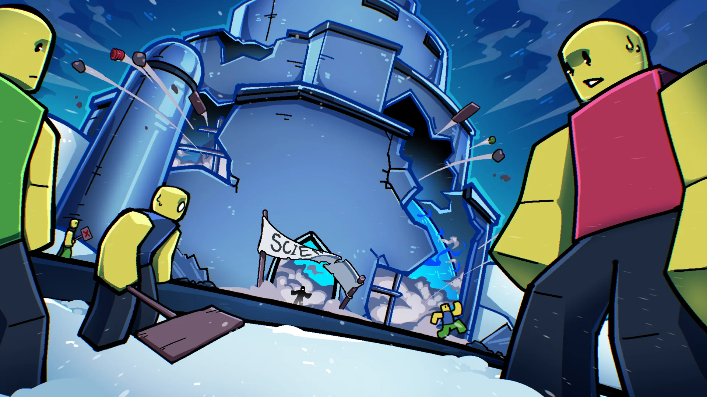
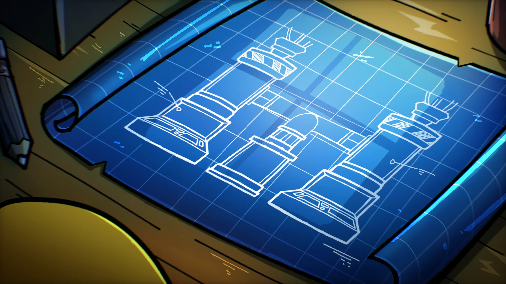
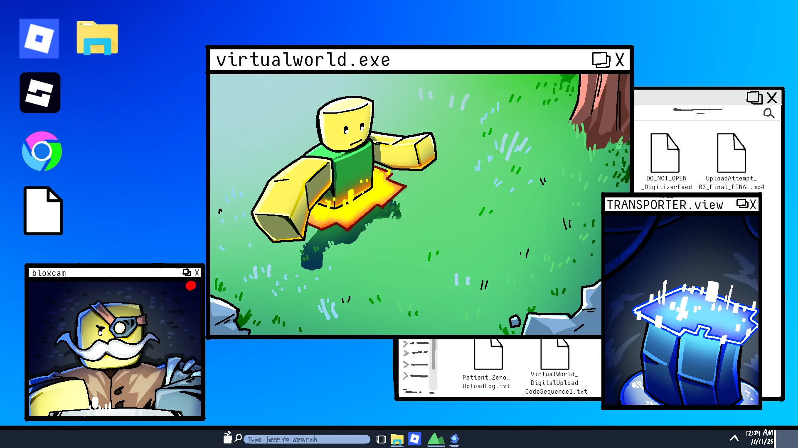
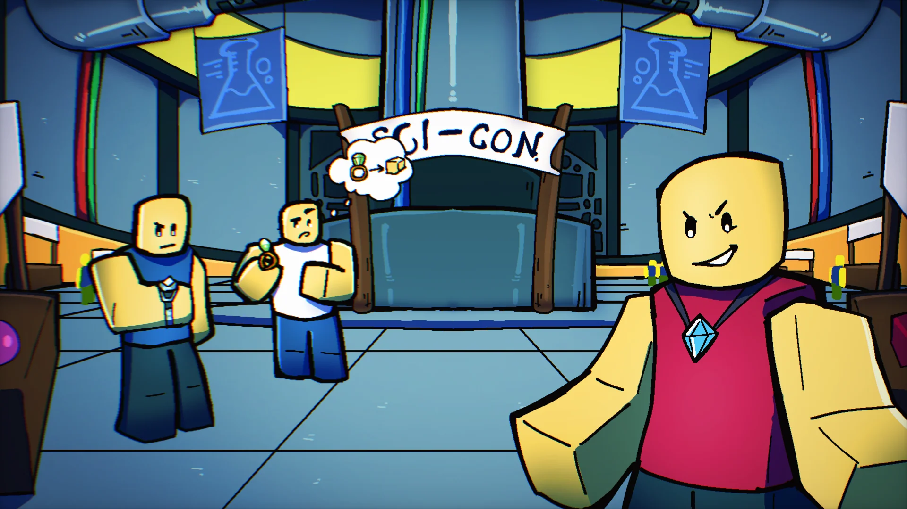

The Blox Bulletin
Incident à Hot & Cold : Le Sommet Scientifique attaqué !
Une explosion a secoué Hot & Cold
Reportage de l'équipe d'actualité
Une soudaine explosion a secoué le centre de recherche de Chaud et Froid (Hot & Cold) plus tôt dans la journée, faisant trembler la Seconde Mer et envoyant un panache de fumée à l'horizon. L'explosion s'est produite lors du Sommet Scientifique annuel de l'île, un événement dirigé par le scientifique en chef Lucien, où des chercheurs et des inventeurs se réunissent pour présenter leurs avancées les plus pointues.
À l'extérieur du Sommet, des manifestants s'étaient rassemblés plus tôt dans la journée, exigeant que les chercheurs cessent d'expérimenter sur l'énergie à base de fruits après des années d'éveils imprévisibles. La tension est montée dans la foule lorsque des témoins ont repéré un scientifique solitaire, identifié uniquement sous le nom de "Zero", forçant son chemin dans l'installation. Certains témoins ont rapporté avoir vu Zero serrer un ensemble de notes, y compris ce qui ressemblait à des codes d'accès de portes de sécurité et un croquis d'un fruit puissant. Quelques instants après l'entrée de Zero dans le complexe, l'île entière a tremblé alors qu'un éclair aveuglant enveloppait les lieux du Sommet en pleine lumière.
Une violente éruption a ravagé l'installation, blessant des dizaines de personnes et dispersant des morceaux de métal à travers l'île. Dans les heures qui ont suivi l'incident, Lucien a finalement publié une brève déclaration confirmant que l'intrus, Zero, était responsable de l'incident. Après avoir absorbé un ingrédient clé qui avait été utilisé pour démontrer une machine lors du Sommet, Zero a fui les lieux.
Découverte d'une machine mystérieuse !
Par Claire Duney, Journaliste d'Investigation
Des équipes explorant les abords du complexe de Chaud et Froid détruit ont commencé à récupérer le peu qui a survécu à l'explosion. Parmi les débris, les chercheurs ont découvert un plan (blueprint) pour un appareil complexe à canaux multiples, apparemment conçu pour un processus basé sur la fusion ; une technologie bien plus avancée que tout ce qui a été présenté lors du Sommet.
Les premières ébauches du design suggèrent que l'appareil n'était qu'un composant d'un système beaucoup plus vaste, laissant entendre que cette machine n'est que la première pièce d'un complot à plus grande échelle.
Transferts virtuels ?
Par Claire Duney
Fait encore plus inquiétant, un disque dur calciné a été récupéré plus profondément dans les décombres. Après une décompilation partielle, les analystes ont récupéré des fichiers sur des "procédures de téléchargement de sujets" et des "environnements de transfert virtuels", suggérant que Lucien avait expérimenté des transferts vers des mondes simulés.
Bien que l'extérieur de l'installation ait été détruit, les enquêteurs ont fait une découverte surprenante : tout l'intérieur est resté parfaitement intact. Selon l'équipe de Lucien, un protocole de défense dormant s'est déclenché dans les dernières secondes avant l'explosion, conçu pour préserver les projets les plus critiques de l'installation.
Mystérieux... Sanctuaire !
Par le Dr. Tywin RockeAlors que les enquêteurs continuent d'interroger les survivants de l'explosion du Sommet Scientifique, un détail curieux a émergé. Nous avons appris que tous les scientifiques ont reçu un petit bibelot (Trinket) à leur arrivée, offert par nul autre que Lucien lui-même. Ces objets prenaient la forme de petits accessoires, comprenant des bagues, des pendentifs et des bracelets à breloques.
"Nous n'avons jamais reçu de cadeaux lors des précédents Sommets Scientifiques. Je suis heureux que nous en ayons eu cette année, car sans cet accessoire, je n'aurais pas survécu à cette explosion !" déclare l'un des participants.
Plusieurs scientifiques ont rapporté quelque chose d'extraordinaire. Ceux qui se trouvaient près de l'explosion ont décrit avoir vu leurs accessoires se mettre soudainement à briller, émettant de faibles impulsions de lumière, avant de ressentir des poussées inattendues de clarté, de force, ou même une explosion d'énergie qui leur a permis de s'enfuir en sécurité après avoir subi les dégâts de l'explosion. Alors que ces accessoires étaient considérés comme des souvenirs inoffensifs, de nombreux participants leur attribuent désormais le mérite de les avoir aidés à rester stables et concentrés au milieu du désastre.
